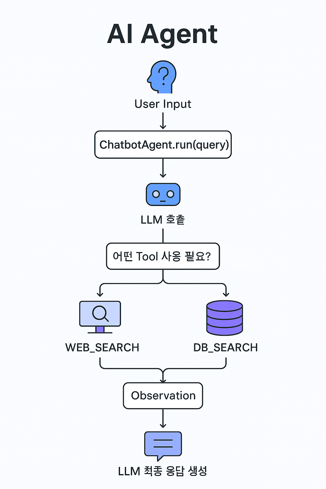

UI & 기능 스크린샷

챗봇 대화 화면

RAG 기반 유사도 검색 결과

웹 검색 결과
이 프로젝트는 LangChain 기반의 RAG 구조를 활용하여
VectorDB 에 임베딩된 데이터 유사도 검색과 Google 웹 검색을 지원하고,
자연어 처리를 통해 사용자의 질문에 정확하고 관련성 높은 정보를 제공하는 에이전트 챗봇입니다.
FastAPI 를 이용해 백엔드 API를 구축하였고, Streamlit 을 통해 사용자 친화적인 UI를 구축하였습니다.

사용자의 자연어 질문을 이해하고, Llama3 기반 LLM 을 활용하여 관련된 답변을 제공합니다.
VectorDB(Qdrant) 에 임베딩된 내부 문서를 기반으로 유사도 검색을 수행하며 정확한 정보를 제공합니다.
최신 정보가 필요하거나 내부 문서에 해당되지 않는 사용자의 질문을 Google 웹 검색을 활용하여 답변을 제공합니다.
대화 컨텍스트를 단기 기억하여 자연스러운 대화 흐름을 유지합니다. 사용자의 이전 질문과 맥락을 고려한 응답을 제공합니다.
- FastAPI 백엔드와 Streamlit 프론트엔드를 연동
- RAG 구조 기반으로 벡터DB(Qdrant) 검색과 Google 웹 검색 통합
- 질문 유형에 따라 내부 문서 검색 또는 웹 검색 자동 판단 로직 구현
- 도구(벡터DB, 웹 검색)를 연결하여 에이전트 챗봇 구성
- Llama3 기반 LLM과 연동하여 사용자 질문에 대한 답변 생성
- 에이전트 도구 선택을 위한 프롬프트 관리 전략 구현
- 사용 모델: hwchase17/react (Instruction-tuned 답변 모델)
- LangChain과 결합하여 벡터DB 검색, 웹 검색 결과를 통합하여 질문에 맞는 답변 생성
- 컬렉션 이름: domeggook
- 벡터 크기(size): 384, 거리 측정(distance metric): Cosine
- 문서를 청킹(Chunking)하여 임베딩 후 저장, 평균 토큰 수: 512
- 코사인 유사도 기반 검색 및 하이브리드 검색(키워드 + 의미 기반) 수행
- FastAPI 비동기 처리로 고성능 RESTful API 구현
- Qdrant 벡터 임베딩 저장 및 코사인 유사도 기반 검색
- 문서 청킹(Chunking) 기법으로 RAG 정확도 향상
- 웹 검색 결과 요약 후 LLM에 전달
- 하이브리드 검색(키워드 + 의미 기반)으로 정확도 향상
- 캐싱 전략 적용으로 응답 속도 최적화
- Streamlit UI를 통해 사용자 친화적 인터페이스 제공
- 실제 챗봇 대화 화면 및 검색 결과 확인 가능
PDF, 워드, 엑셀 등 다양한 문서 형식에서 직접 텍스트를 추출하고 분석할 수 있는 기능을 추가할 예정입니다. 이를 통해 더 다양한 형태의 정보를 활용할 수 있을 것입니다.
JWT(JSON Web Token)를 활용한 안전한 사용자 인증 시스템을 구축할 계획입니다.
챗봇 대화 화면
RAG 기반 유사도 검색 결과
웹 검색 결과